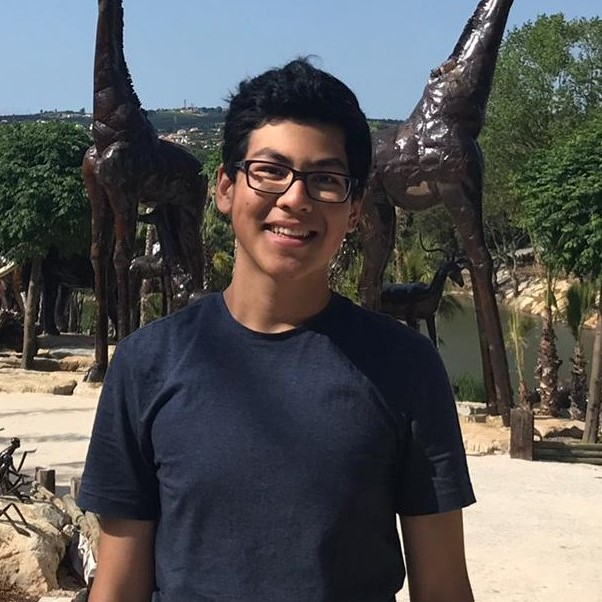
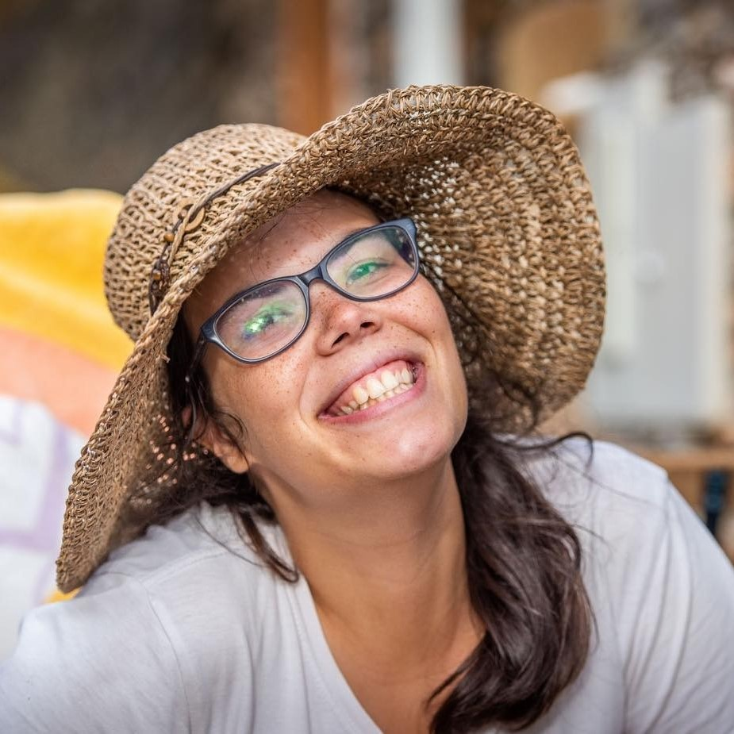

CUPor's committee for 2021-2022
President
João Pinho Silva
Viva! Estou agora no 3o ano do meu curso de Economia em Jesus College. Vivi em Portugal toda a minha vida antes de vir para cá estudar aos 18. Jogo voleibol na equipa da universidade (embora este ano isso vá ser mais complicado) e adoro carros, política e, claro, o nosso país! Estou ansioso por te conhecer num dos nossos muitos eventos e por favor contacta-me para qualquer coisa que queiras.
Localidade: Cascais
Manifestos
Email: cupor-president@srcf.net
Vice-President
Matilde Duarte
Olá! Tenho 23 anos e estou no meu segundo ano do Doutoramento em Medical Science.
Para além de investigação em oncologia ser uma das minhas grandes paixões pois posso ajudar outras pessoas, também gosto de viajar, conhecer novas culturas e línguas, cozinhar e ver Netflix (mais uma obsessão do que outra coisa)!
Localidade: Cascais
Manifestos
Email: cupor-vicepresident@srcf.net
Secretary
Matias Silva
Part time Engineering student, full time at distracting myself. Adoro bolos.
Localidade: Lisboa
Manifestos
Email: cupor-secretary@srcf.net
Treasurer
Mariana Lima
Olá! O meu nome é Mariana estou neste momento no 2º ano de Doutoramento em Música, especialidade de música medieval. Faço parte do Selwyn College (o College com o Bar mais fixe de Cambridge) e nos meus tempos livres para além de tocar piano e guitarra, adoro viajar e estar com os amigos.
Localidade: Setúbal